番目のお客さんです
今このブログを見ている人数は、です

曲タイトル


読み込み中...
- 年齢: 13歳
- 性別: 男性
- 主な活動場所: Scratch・Discord・YouTube
- スク友


WiiUの機能を現代でも復活させる方法を伝授!
Miiverseも動くように!
2026/09/23
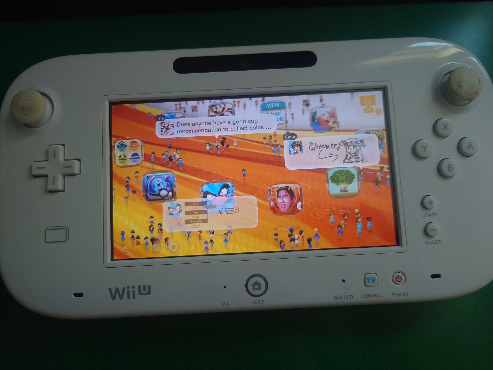
サポートが終了したWii U、何もできなくて娯楽がないこと、ありますよねぇ?
そんなあなたに今回はMiiverseとYouTubeの復活方法を教えます!
注意: この記事で紹介するものはWii UをSDカードを使い改造をすることが書かれています。一見普通に見えますが、中にはBANや故障のリスクがあるものなどがあります。真似するときは自己責任で行ってください。またこの記事見てWii Uぶっ壊れた! 弁償しろって言われてもこっちは責任取りません。(マジで不安定だからね? 俺これやって二回くらいホーム画面に行けなくなったから)
目次
①準備②Aromaの導入
③YouTubeの復活手順
④Miiverseの復活手順
⑤最後に
①準備
用意するもの↓
- PC(スマホだと難しい)
- SDカード
- パーティションFAT32に変換するツール
です!
Mission. SDカードをFAT32でフォーマットしろ!
4GB以上のSDカードを使う場合、面倒なことにWindows標準だったらFAT32にフォーマットすることができません!しかもFAT32じゃないとAromaが入りません!
Q.じゃあどうするhimazin0239!
A.そうだ、ソフトを使おう。
てことでソフト2種類くらい見つけてきました!
No2. Fat32Formatter
この二つさえあれば(たぶん)SDカードをFAT32でフォーマットできると思います!
完成したら次の手順にGO!
②Aromaの導入
ほとんどの手順は下のリンクが参考になると思います。
Wii U Hacks Guideよくわからない人のためにわかりやすく画像つきで説明します!
Step1. Aromaのファイルをダウンロード
まずはこのサイトにアクセスしてください。
そしてスクロールするとこのボックスがあると思います。
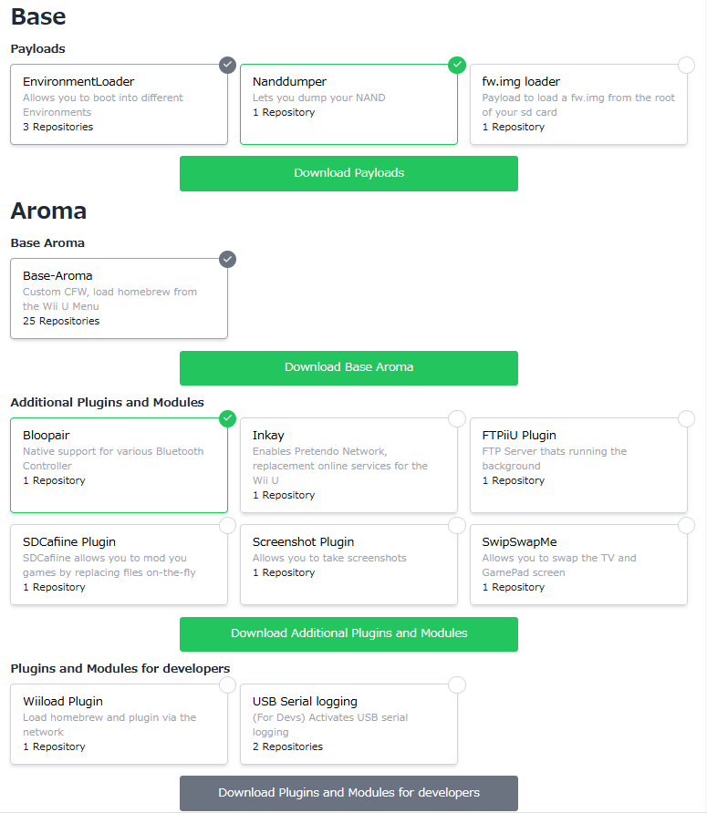
まず、BaseとAromaって書いてる部分 ここは普通にダウンロードしていいです。
そしてAromaの中にあるものは、オプションで入れておくといいもの 別に入れなくてもいいけどプラグインとかの導入が簡単になったり、カスタムテーマを適用できたりするものもあるから自分に合うやつを入れればいいと思う。
そしてダウンロードしたらZIPの中身を全部SDカードに入れてください。
これでSDカードの準備は完了です。SDをWii Uに入れてください。
Step2. 本体をバックアップ
Wii Uを起動し、インターネットにつながっていることを確認して、インターネットブラウザを開きます
アドレスバーにwiiuexploit.xyzと入力し、開きます。
Run Exploit!っていうボタンを押した直後にBボタンを長押しします。
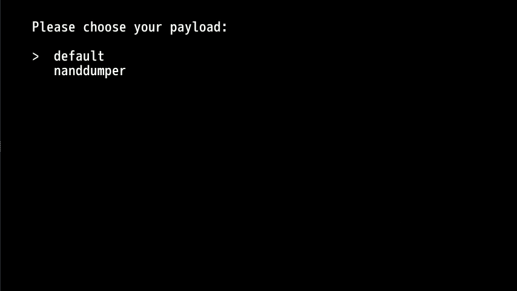
この画面が出たらnanddumperを選択し、Aボタンを押します
あとはAを押して完了するのを待ちます。
Wii Uはシャットダウンするのでそのまま続けることもできますが、SDカードをPCに入れて、slc.bin, slccmpt.bin, seeprom.bin, otp.binをバックアップすると良いでしょう。
Step3. PayloadLoaderのインストール
まず先ほどと同様、wiiuexploit.xyzにアクセスします。
その次BボタンではなくXボタンを押してください。
そうすると青い画面が出るのでaromaを選択した状態でAボタンを押してください。
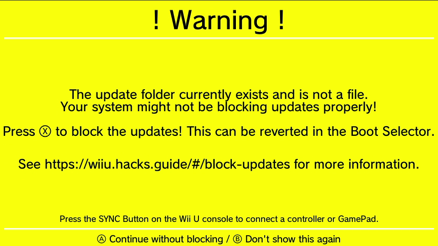
このような画面はBボタンを押すか、Xボタンでアップデートをブロックしてください。
黒い画面が出るので、Wii U Menuを選んでください。
Wii Uのメニューが起動したらPayloadLoader Installerを起動。
Aボタンを押してアップデートを確認したのち、Aを押してインストールしてください。
完了したらシャットダウンの項目を選択して、これで終わりです。お疲れ様でした。
③YouTubeの復活手順
まず、以下のサイトにアクセスしてReleasesから適切なファイルをダウンロードしてください。
GiveMiiYouTubeWUP Installer GX2
以下のサイトはスクロールしてリンクをクリックしてダウンロードしてください
Sigpatches Module[重要!]GiveMiiYouTubeはwiiu/environments/aroma/pluginsに、
WUP Installer GX2はwiiu/appsに
Sigpatches Moduleは wiiu/environments/aroma/modules/setupに配置してください。
あとは既に入っているYouTubeをアンインストールし、WUP Installer GX2を起動し、YouTubeをインストール、起動してTV版は起動すれば完了です。
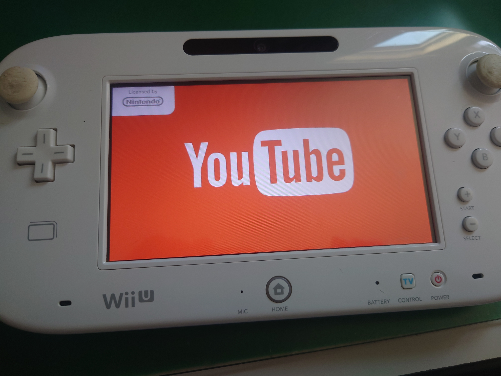
治ってない!...かと思いきや
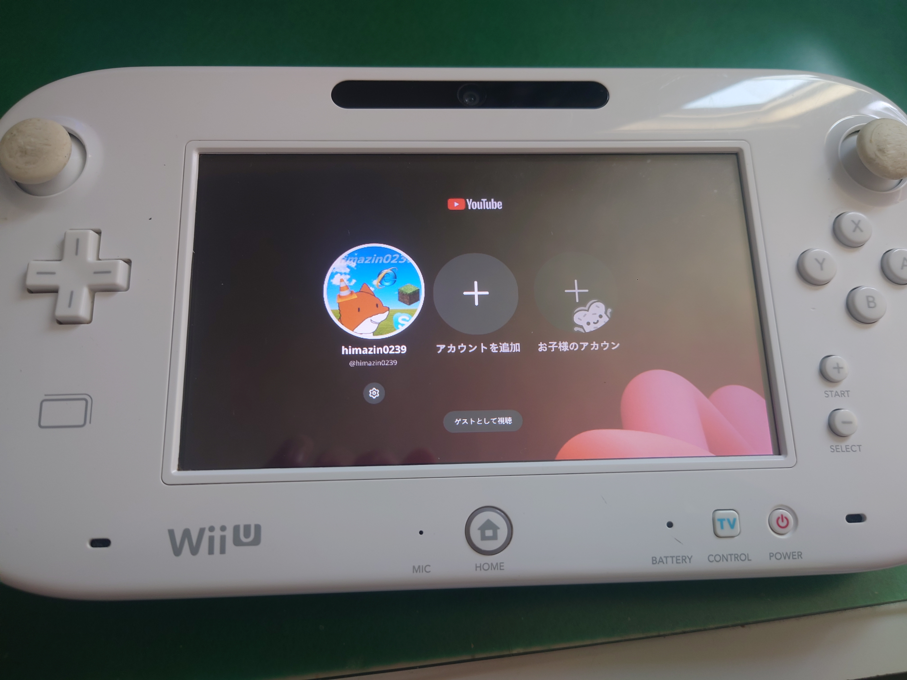
TV版
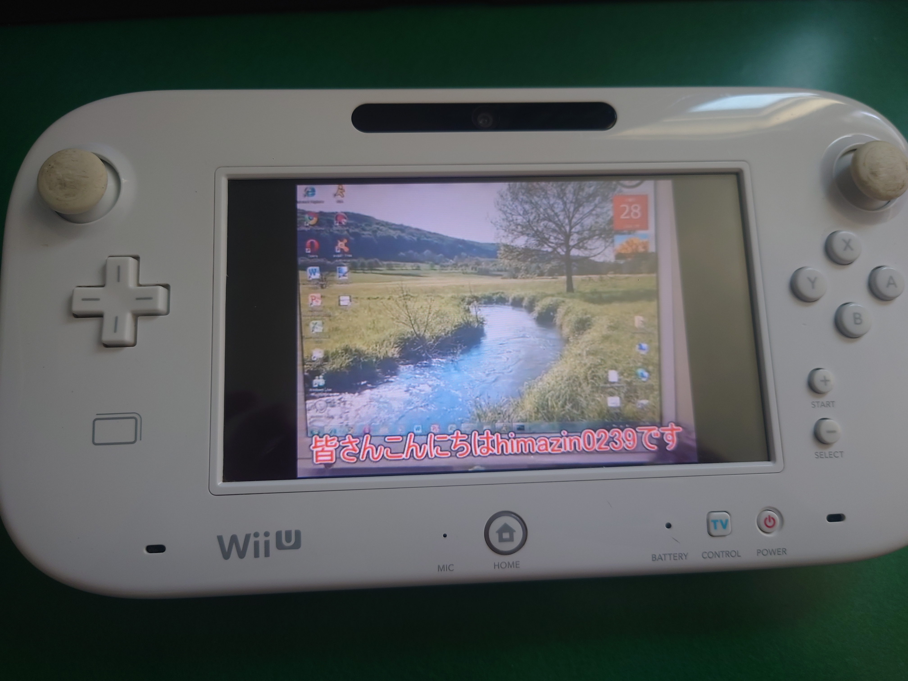
めちゃくちゃ遅いけど動画は見れるよ
④Miiverseの復活手順
いよいよMiiverseの復活です気合い入れましょう
Pretendo標準でMiiverseがありますが、見た目が良くありません...
ここはProject Roséの出番!
Project Roséのページにアクセスしてファイルをダウンロード、
WMSファイルはwiiu/environments/aroma/modulesに、WPSファイルはwiiu/environments/aroma/pluginsに配置してください。既存のPretendo版はバックアップして削除しておいてください。
するとあら不思議いとも簡単にMiiverseが当時そっくりに復活してるではあませんか
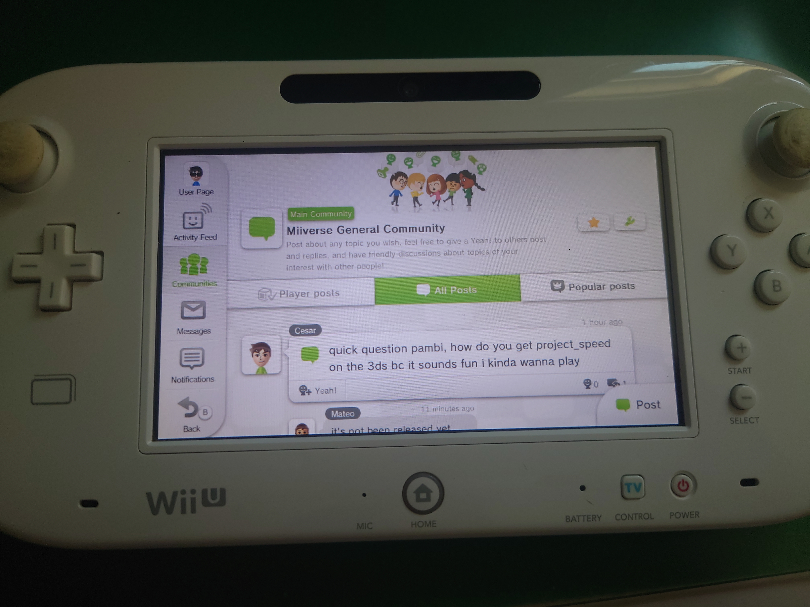
なお、アカウントはパスワードを入れないとWeb版が使えません。設定したらこんなこともできちゃいます!
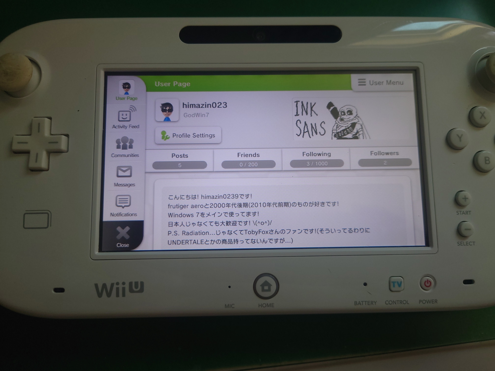
しかもゲーム内ではPretendoネットワークが使われているので、ゲームのスクショをMiiverseにあげることも出来ちゃいます!
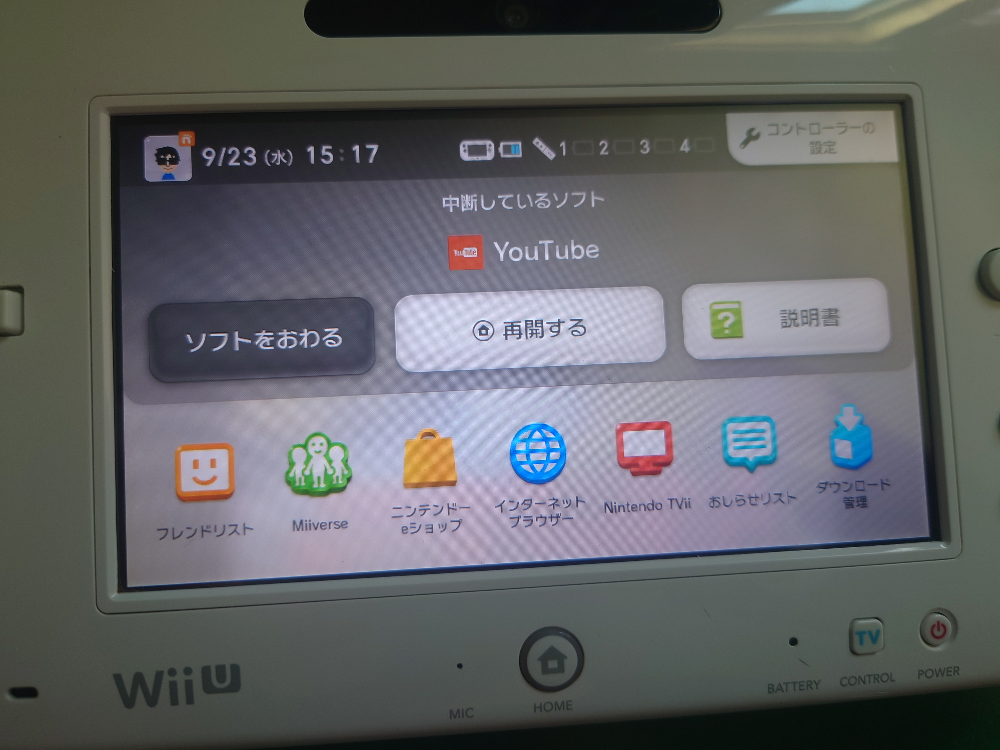
Miiverseアイコンをクリックすると、
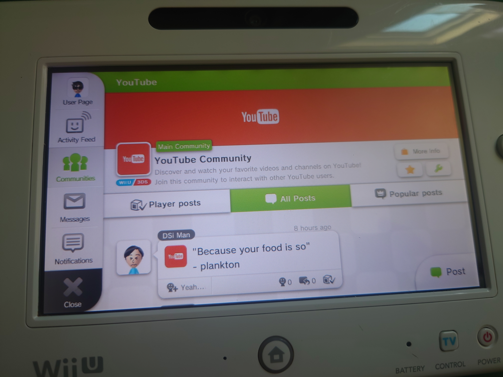
ちゃんとそのコミュニティに
⑤最後に
今回はWii Uで一部の機能をふっかつする手順をお伝えしました!
でもこれで終わりではありません...
なんとProject RoséはNintendo TViiを復活しようとしているんです!(しかも日本語版も)
そしてPretendoはWii U Chatを
これは待ちきれないですね!
見なさんもよいWii Uライフを!